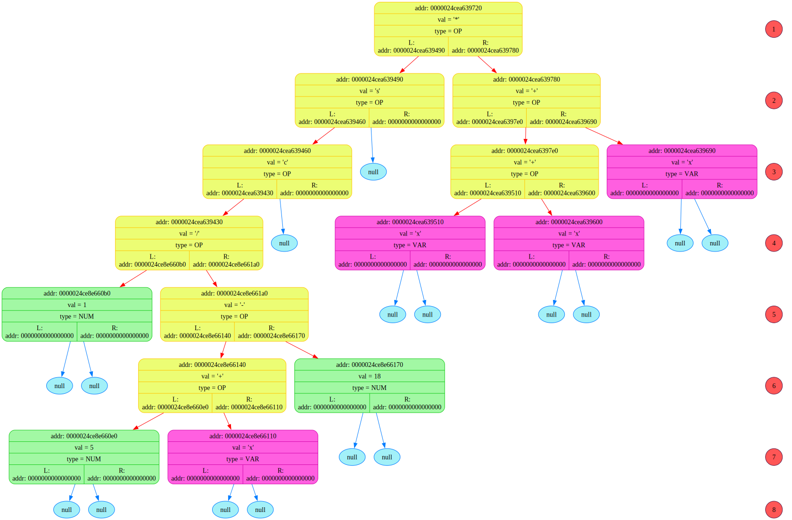

READ_file: addr buffer_adr = 2529348182144
=============================================================================
Symbol = <(>, his addr = 2529348182144
Symbol = <s>, his addr = 2529348182145
Symbol = <(>, his addr = 2529348182146
Symbol = <c>, his addr = 2529348182147
Symbol = <(>, his addr = 2529348182148
Symbol = <1>, his addr = 2529348182149
Symbol = </>, his addr = 2529348182150
Symbol = <(>, his addr = 2529348182151
Symbol = <5>, his addr = 2529348182152
Symbol = <+>, his addr = 2529348182153
Symbol = <x>, his addr = 2529348182154
Symbol = <->, his addr = 2529348182155
Symbol = <1>, his addr = 2529348182156
Symbol = <8>, his addr = 2529348182157
Symbol = <)>, his addr = 2529348182158
Symbol = <)>, his addr = 2529348182159
Symbol = <)>, his addr = 2529348182160
Symbol = <)>, his addr = 2529348182161
Symbol = <*>, his addr = 2529348182162
Symbol = <(>, his addr = 2529348182163
Symbol = <x>, his addr = 2529348182164
Symbol = <+>, his addr = 2529348182165
Symbol = <x>, his addr = 2529348182166
Symbol = <+>, his addr = 2529348182167
Symbol = <x>, his addr = 2529348182168
Symbol = <)>, his addr = 2529348182169
Symbol = <$>, his addr = 2529348182170
symbol = <\r>, addr = 2529348182171
symbol = <\n>, addr = 2529348182172
symbol = <\0>, addr = 2529348182173
=============================================================================
